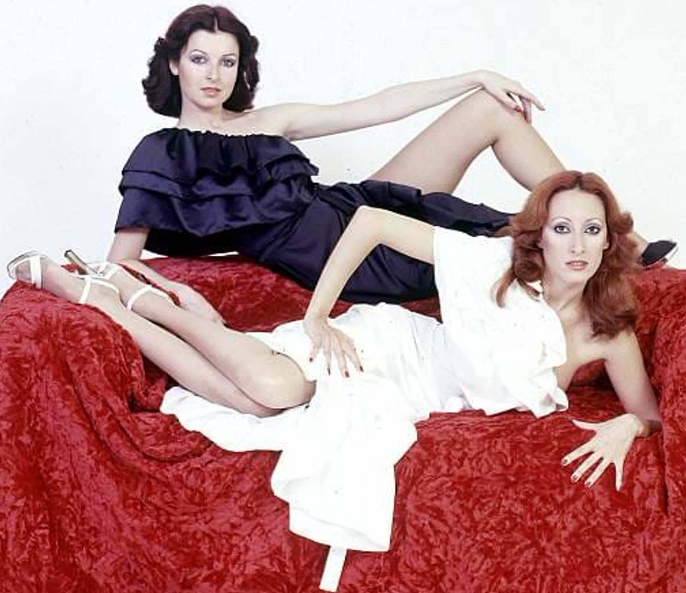

«Жизнь — это болезнь, от которой все умирают»
Андрей Платонов
Ва́ccara («Баккара́») — испанская женская поп-группа, наиболее популярная в конце 1970-х — начале 1980-х годов.
В мире известна благодаря хитам «Yes Sir, I Can Boogie», «Cara Mia», «Sorry, I’m a Lady».
Группа названа в честь сорта розы, которая и служит логотипом коллектива.
Знакомство Майте (Марии-Терезы) Матеос (Mayte (Maria Teresa) Mateos) (род. 7 февраля 1951) и Марии Мендиолы (Maria Mendiola)
(4 апреля 1952 — 11 сентября 2021) произошло на гастролях балета испанского телевидения. Как выяснилось,
женщины имели много общего. Во время этой встречи Марию посетила мысль попробовать себя и Майте в качестве
музыкального коллектива и выступить на сцене. Эта идея была успешно реализована, и дуэт начал выступать в ночном клубе.
В скором времени между участницами группы и владельцем этого клуба возникли разногласия,
следствием чего явилось увольнение обеих солисток.
